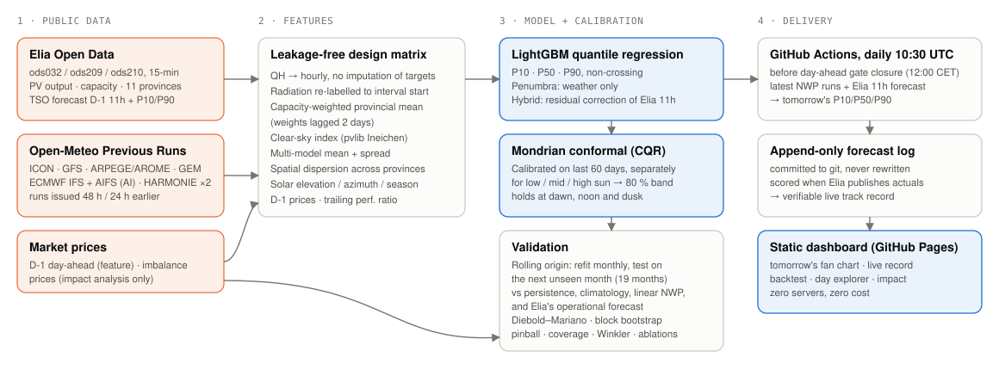

DataNova 2026 · DN-SU-01 Solar Energy Generation Forecasting · Sustainability track
Day-ahead solar forecasts that know when they're unsure.
Penumbra forecasts tomorrow's output of Belgium's ~12 GW photovoltaic fleet from eight archived weather models (including ECMWF's AI model), wraps every hour in a conformally calibrated 80 % band, and is scored against the grid operator's own forecast — in a 19-month leakage-free backtest and in a public, append-only live track record.
Tomorrow in Belgium
Live track record
Backtest: 19 months, out of sample
All methods
Is the difference real?
Diebold–Mariano test on daily mean absolute-error differentials (Newey–West variance) and a 95 % moving-block bootstrap interval of the nMAE difference. Negative = Penumbra better.
What drives skill (ablation, strict setting)
Explore any backtest day
Why a few percent matter
How it works

Data
- Target: Elia Open Data ods032/ods209/ods210 — upscaled measured PV output, quarter-hourly, 11 provinces + national, with installed capacity.
- Benchmark: Elia's own day-ahead forecast issued D-1 11:00 with its P10/P90 band (same files).
- Weather: Open-Meteo Previous Runs API — ICON, GFS, ARPEGE/AROME, ECMWF IFS, ECMWF AIFS (AI), HARMONIE (KNMI, DMI), GEM, at fixed 24/48 h lead, 11 provincial points.
- Prices (impact only): Energy-Charts day-ahead (CC BY 4.0) and Elia imbalance prices.
Model
- Capacity-weighted national features per weather model, multi-model mean and spread, clear-sky index (pvlib Ineichen), plane-of-array irradiance, spatial dispersion, trailing performance ratio, yesterday's day-ahead prices (curtailment risk).
- LightGBM quantile regression for P10/P50/P90 of the capacity factor; non-crossing.
- Mondrian conformal calibration per solar-elevation regime on the last 60 days → finite-sample coverage guarantee under exchangeability.
- Hybrid learns a residual correction and calibrated band on top of Elia's 11:00 forecast, which is public at the same moment.
Honesty rules
- No input from the future: 48 h-old weather runs, capacity lagged two days, refit monthly on past data only (unit-tested).
- All methods scored on the identical set of daylight hours.
- Significance tested, not eyeballed.
- Live log is append-only and timestamped by git.
- Limitations are listed in the README.